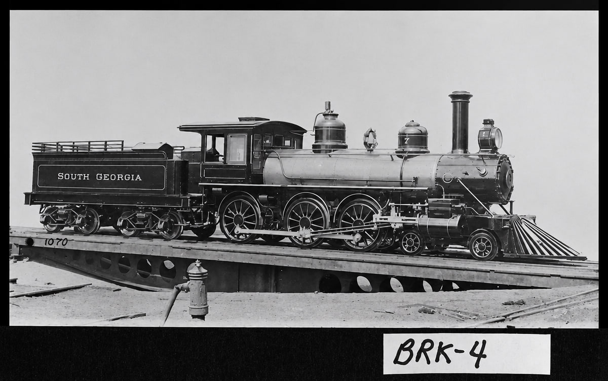
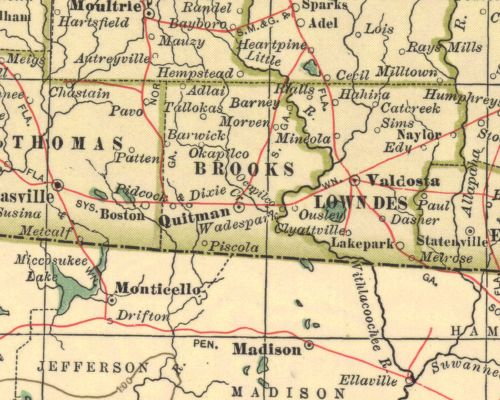
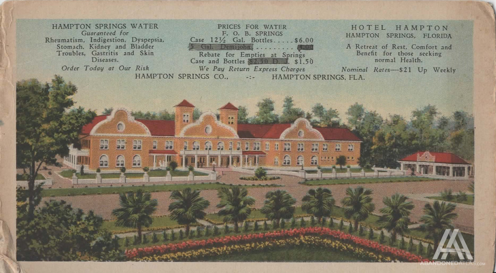
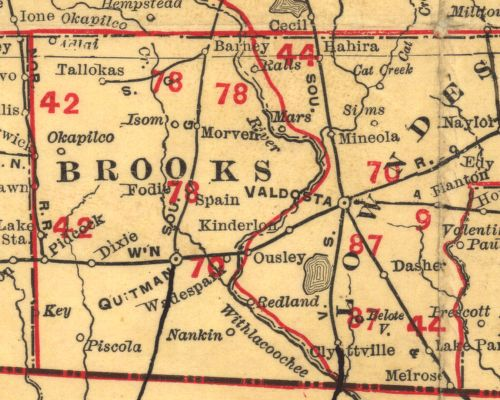
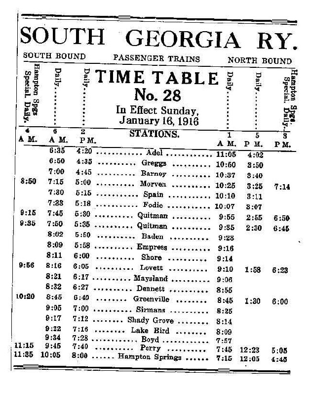

South Georgia Railroad: how a timber tram became a local corporation

The South Georgia Railroad was not created by one man signing a paper or by James W. Oglesby and Zenas W. Oglesby laying track on their own. The surviving record shows a sequence: the two brothers supplied the initial business proposition and much of the financial drive; Quitman and Brooks County leaders raised local subscriptions; twenty-six men lent their names to the charter petition; stockholders chose a nine-man board; and the board divided executive responsibility among a president, vice president, treasurer, and superintendent. The first line then took nearly a year to move from corporate organization to passenger operation.
This account distinguishes those roles. An organizer was not necessarily an incorporator. An incorporator was not necessarily a director. A director was not necessarily an operating officer. The links below lead to individual dossiers stating exactly what is documented for each person and what remains unknown. The same files are collected in the railroad organizers index.
Timber, Heartpine, and the reason for a railroad
James W. Oglesby and Zenas W. Oglesby came to South Georgia from the state's middle section and established a large sawmill at Heartpine, about three miles north of Cecil, on the Georgia Southern and Florida Railroad. Folks Huxford wrote that they bought some timberland and leased more, much of it extending south into Brooks County. A tram road would have brought logs to their mill. The brothers instead proposed a permanent railroad that could serve their timber operations and the wider public.
Their idea met a preexisting local demand. Quitman and Morven wanted a rail outlet northward to the Georgia Southern and Florida. Quitman already had east-west service, but a north-south line promised access to Morven, timber country, naval-stores camps, farms, and another trunk connection. This overlap of private timber need and public transport ambition made the proposal workable.
The half-cost proposal and the January meetings
According to Huxford's 1948 reconstruction, James W. Oglesby and Zenas W. Oglesby made a written proposal in January 1896: if the businesspeople of Quitman and Morven raised half the cost of a railroad between Adel and Quitman, the brothers would pay the other half. Huxford's wording is the best located account of that proposal. The underlying January 1896 Quitman Free Press issues have not been located for direct inspection, so the offer should be attributed to Huxford rather than presented as a surviving contract.
Business leaders met on Thursday, January 29. They accepted the proposition and appointed two subscription groups. Four men worked in Quitman: A. J. Rountree, Frank J. Spain, R. C. McIntosh, and John W. Hopson. Five covered the county at large: Mitchell Brice, Fleming Bates Walker, S. M. Young, Dr. T. W. Hunter, and John William Hitch, whom Huxford printed as James W. Hitch. The identity investigation makes John the strong-probable committee member, but the original January report has not been located.
Huxford says a second meeting followed five days later. The subscription committee reported the money raised, after which the meeting appointed one committee to secure a charter and another to obtain right-of-way. No located source names the members of those two committees. It would be tempting to assign the work to the subscription men or later directors, but the evidence does not permit that.
The charter corporation
The charter petition fixed capital at $65,000 in 650 shares, or $100 per share. Railroad historian Donald R. Hensley Jr. dates incorporation to March 6, 1896. The original state charter has not been inspected, but the charter was in place by the stockholders' March 23 meeting.
Huxford names twenty-six charter petitioners. The complete roster, with links to their dossiers, is on the Railroad Organizers page. Its identity notes explain why Dr. James H. McCall, an incorporator, is kept separate from his brother John G. McCall, a founding director. They also explain the conflicting James and John Hitch references.
Huxford wrote that other people became stockholders, so his list is not a full investor roll and does not show how much each man subscribed. No Oglesby appears among the twenty-six petitioners. Contemporary reports still place the brothers at the stockholders' organization meeting, and later evidence describes their majority control.
Permanent organization on March 23, 1896
The company permanently organized at Quitman City Hall on Monday evening, March 23. Here the evidence becomes contemporary. Reports in the March 24 Savannah Morning News and March 25 Atlanta Constitution say the stockholders accepted the charter, adopted bylaws, and elected directors. The Constitution added an important financing detail: $7,500 of stock remained untaken when the meeting opened, but the balance was subscribed with little solicitation. The report declared the construction money raised.
The stockholders elected nine directors: Frank J. Spain, John W. Hopson, John G. McCall, R. C. McIntosh, James W. Oglesby, John W. Hitch, A. J. Rountree, Zenas W. Oglesby, and J. J. Oglesby. Huxford's errata corrects the director's name from James W. Hitch to John W. Hitch. The separate January committee reference remains strong probable rather than verified.
After the stockholders adjourned, the directors met and chose James W. Oglesby as president, John W. Hopson as vice president, John Tillman as treasurer, and Zenas W. Oglesby as superintendent. They called for payment of 10 percent of subscribed stock. Two surveys had already been made; the directors still had to choose between them, and work was expected to begin within days.
The two contemporary articles resolve several common errors. James W. Oglesby, not Zenas W. Oglesby, was president. Zenas W. Oglesby was superintendent and a director. The company was neither a one-man proprietorship nor an enterprise with only two owners. Later evidence supports Oglesby-family majority control, but the corporation had other stockholders, nine directors, and divided offices from the beginning.
Which route did they intend to build?
The planning language changed. Huxford described the January offer as an Adel-to-Quitman road. The March 25 contemporary report called it a projected Quitman-to-Tifton road. The line actually opened between Quitman and Heartpine, where it connected with the Georgia Southern and Florida, at roughly 27.5 to 28 miles. These statements belong to different stages of planning; they should not be flattened into a claim that the original survey, charter ambition, and first built segment had identical endpoints.
The proposed traffic explains the route. An April 1896 report anticipated naval stores, lumber, farm products, and general merchandise. The Oglesby timber position supplied a large anchor business. Morven and northern Brooks County supplied communities and farms that had wanted railroad access. Quitman supplied capital, merchants, lawyers, bankers, and public leadership. The corporation joined those interests.
Construction, the first passenger train, and regular opening
Huxford, citing the February 6, 1897 Quitman Free Press, dated the first passenger train into Quitman to Tuesday, February 2. A crowd and the Quitman Cornet Band met it. The company invited the gathering aboard for a free trip to Heartpine; more passengers joined at Morven; and Mrs. Oglesby served dinner to the band at Heartpine. This sounds like an inaugural excursion or demonstration run.
Later railroad histories date regular opening of the Heartpine-Quitman line to March 1897. The February excursion and March opening are not necessarily contradictory. One can mark the first celebratory passenger movement and the other the beginning of scheduled service. Until a regular-service notice or timetable is located, the careful chronology is: first passenger excursion documented February 2; regular opening generally dated March 1897.
By June 3, 1897, a contemporary newspaper called Barney a station on the South Georgia Railroad. The line had created a new transport center in northern Brooks County. The Foster post office moved to the railroad site and took the Barney name. Morven gained the rail service residents had sought. Timber and naval-stores traffic could move toward Quitman and the Georgia Southern and Florida connection.

Mail, mills, and the first year of operation
The railroad still needed federal mail service. In October 1897 Henry G. Turner and James W. Oglesby went to Washington for that purpose. Their trip extended the work of creation beyond grading and rails: a local railroad became more useful when it carried the mail and connected the communities along its route to national systems.
The railroad and timber business grew together. An October 26 Valdosta Times report said the Oglesby mills at Heartpine and Barney were running full time on passenger-car-sill orders for Ohio Falls Company, Pullman, and the Barney & Smith Car Company. That evidence ties the new corridor to the lumber trade. It does not prove that Barney & Smith owned the South Georgia Railroad or that the Ohio manufacturers financed its construction.
What the founding record does not tell us
No located stock ledger gives each investor's shares. No located minute book identifies every person who attended the January or March meetings. The charter and right-of-way committees remain unnamed. Construction contractors, graders, track laborers, survey crews, and landowners who granted right-of-way are largely absent from the surviving account. The Railroad Organizers page covers every person currently named in the organizing, subscription, charter, founding-board, and first-officer record. It does not suggest that those named organizers were the only people whose labor made the railroad possible.
The operating roster was much larger
A broader search of newspapers, census records, court opinions, and federal files has begun to recover the people who worked for the railroad after organization. The strongest additions include general passenger agent J. T. Davis; station agents L. M. Wingate at Greggs, E. H. Pike at Morven, M. L. Adams at Spain's, Charlie Brown and A. J. English at Barney, and D. Alderman at Adel, Barney, and Morven; conductors J. F. Hall, J. B. Hall, and E. M. Clark; general freight and passenger agent Charles Iverson Harrell; superintendents J. H. Nelson and R. H. Rives; trainmaster W. M. Leverette; treasurer Charles Thomas Tillman; and later auditor and director C. F. Cater.
Wilbur Oglesby was acting superintendent by about 1913 and was formally appointed superintendent in January 1915. He served until entering the Army and died in France in 1918. His brother James Wood Oglesby Jr. was general manager by December 1919 and later served as a director. Huxford also identifies James Jr. as first vice president. They were separate men, and Wilbur's superintendent service should not be combined with his brother's later management record.
The record also reaches ordinary train service. Oscar Mullinax, engineer C. W. Crews, and a fireman printed as Kid Granger were aboard a freight train wrecked in 1945. A separate 1903 wreck near Barney killed fireman Dixon and a second crewman whose name remains unknown. The 1900 Barney census records B. H. Legg as a railroad agent and Isham Jones Pounds as a locomotive engineer. Their place and occupations make South Georgia employment probable, but the census does not name the company.
These names require the same caution applied to the founders. The 1899 profile prints conductor J. F. Hall, while a 1946 obituary calls J. B. Hall a former South Georgia Railroad conductor. Census and local evidence strongly identify J. B. as John Byron Hall, but the saved obituary note lacks its original page-image identifier. The 1900 census records John F. Hall and John Byron Hall as separate men, so the two conductor references cannot yet be merged. Conflicting Myers initials and several incomplete names also remain open.
The expanded evidence changes the boundary of the project, not the founding roster. The 34 dossiers cover every person presently identified in the subscription, charter, first board, and first offices. They do not cover every later employee or manager. Separate operating-person dossiers will be added only after each identity has been researched and controlled against namesakes.
Later leadership
The first board changed as the railway developed. Mitchell Brice and Samuel S. Rountree were directors by March 1899. Roderick C. McIntosh succeeded John W. Hopson as vice president in February 1900 after Hopson disposed of his holdings. By March 1900, Henry Gray Turner was both a director and general counsel; he declined reelection to the board because he was serving as counsel. An April 1906 newspaper identified Edwin A. Jelks as a director, although his election date and length of service remain unknown.
At the 1925 annual meeting, the six directors were James W. Oglesby Sr., McIntosh, Rountree, Charles T. Tillman, James W. Oglesby Jr., and C. F. Cater, whose surname appears as Carter in one saved OCR rendering. Oglesby Sr. was president, McIntosh vice president, and Tillman secretary-treasurer. Rountree was president by December 1939. Huxford says he succeeded Oglesby in 1930, but the election notice or minutes have not been found. A contemporary report verifies Rountree as board chairman in October 1945.
From local line to South Georgia Railway
The first built line ran from Heartpine through Barney and Morven to Quitman. It later pushed south. The Greenville extension opened in 1901; the company leased Florida's West Coast Railway in 1902; Perry was reached in 1904; and the northern endpoint shifted from Heartpine to Adel. During the lease period, equipment and public usage employed the South Georgia & West Coast name, although later technical research cautions that this was not always a separate incorporated company.
The corporate name also needs care. The 1896 organization and construction reports say South Georgia Railroad Company, and newspapers still used South Georgia Railroad in 1897. A March 1899 annual-meeting report used South Georgia Railway Company. The legal instrument and exact date of the change have not been located, so the founding years are described here as Railroad while later operation is generally called Railway.
The expanded route carried passengers, freight, mail, timber, and naval stores between South Georgia and North Florida. It also connected related Oglesby interests, including lumber companies and the Hampton Springs branch. Barney remained one working point in a larger system rather than merely a name on a map.
Hampton Springs branch and resort
Hampton Springs was both a railway destination and a related resort enterprise. Huxford credits James W. Oglesby with buying the hotel, improving the property, and extending the railroad there. A March 1912 newspaper reported a new hotel nearing its formal opening, landscaping in progress, and about $60,000 spent on the property during the preceding year. James and Zenas W. Oglesby had also bought three motorboats to carry guests from the springs down the Fenholloway River to a fishing clubhouse near the Gulf. The article's ownership wording is singular, however, and does not prove that Zenas personally owned or managed the resort. A December 1914 report directly identified James as owner of the Hampton Springs Hotel.
A June 1913 federal river examination says both the South Georgia Railway and the Live Oak, Perry & Gulf Railway had branch lines extending to Hampton Springs. It valued the hotel and related improvements at $75,000 to $80,000 and estimated the local population, apart from hotel employees, at no more than about 150. This proves South Georgia service or access before the reported 1915 purchase of the Inter-State Lumber Company logging line. The dates may describe use followed by acquisition, but 1915 was not the beginning of railway access.
TapLines reports that South Georgia first ran passenger trains to the springs over the Live Oak, Perry & Gulf, then bought Inter-State Lumber Company's five-mile Perry-Hampton Springs logging railroad on March 1, 1915, for $26,343. At one point, according to the same specialist history, the resort received six South Georgia trains and four Live Oak, Perry & Gulf trains each day.
A 1919 promotional profile said the South Georgia Railway owned and operated the Hampton Sulphur Springs and Hotel Company. It described a two-story hotel with wide verandas, dining and music rooms, a $10,000 casino with a theater and ballroom, a golf course, hot and cold sulphur baths, a plunge pool, boating, fishing, and hunting. These details show why passenger access mattered to the railway, even though the article's medical claims for the spring water should be read as period advertising.

The Florida Railroad Commission's official 1929 route table lists 44.41 Florida miles from the state line to Hampton Springs. TapLines dates the end of branch service to February 20, 1929, and removal of the track to 1931. The available evidence connects the railway, hotel company, and James Oglesby's resort development. It does not show that Zenas personally held title to Hampton Springs or that resort profits financed the railroad.
A 1939 federal appellate opinion preserves the railway's 1922 refinancing resolution. It records $500,000 in authorized common stock, $58,000 then issued, a $205,500 West Coast Railway purchase payable in South Georgia stock, and $199,000 in first-mortgage bonds. The opinion provides direct evidence for the financing behind the later combined system.
Barney also connected smaller woods operations to the main line. An October 1899 county profile said Mitchell Brice operated a tram road about seven miles west from Barney to his mills and turpentine still. A 1901 report placed Brice's mill at Tallokas. The 1900 map below and the 1906 Cyclopedia of Georgia describe a branch from Barney toward Tallokas, making identification with Brice's tram strong probable. No operating agreement or corporate transfer has been found, and an October 1906 newspaper says the Brice estate sold several miles of tram rail for reuse near Quitman. The Tallokas-to-Barney tram dossier separates this westbound line from the different branch proposed toward Valdosta in March 1899.

Passenger service remained part of the system after the founding period. A January 1916 timetable lists Barney between Greggs and Morven. Railroad-history sources also preserve Baldwin steam-locomotive records from 1910 and 1928, followed by later photographs of diesel power.

Brooks-Scanlon acquired the line in 1946. Southern Railway bought it in 1954. In 1971 it merged with the Live Oak, Perry & Gulf to form the Live Oak, Perry & South Georgia Railway. Those later changes matter, but they should not obscure the local coalition that made the first 1896-1897 segment possible.
Creation timeline
- January 1896: Huxford dates the written half-cost proposal by James W. Oglesby and Zenas W. Oglesby to this month.
- January 29, 1896: Quitman and Brooks County leaders meet and appoint the nine-person subscription committee.
- February 3, 1896, approximately: Huxford's "five days later" second meeting receives the subscription report and appoints charter and right-of-way committees.
- March 6, 1896: Later technical history dates incorporation to this day; the original charter remains unlocated.
- March 23, 1896: Stockholders accept the charter and bylaws, complete the remaining stock subscription, elect nine directors, and trigger the directors' selection of first officers and a 10 percent stock call.
- April 1896: The Heartpine-Quitman line is reported nearing completion with 40-pound rail; expected traffic includes naval stores, lumber, farm products, and general merchandise, and the company intends to buy one locomotive.
- February 2, 1897: Huxford's Free Press-based account dates the first passenger train and free Heartpine excursion.
- March 1897: Later technical histories date the beginning of regular Heartpine-Quitman operation to this month.
- June 3, 1897: Barney is documented in a contemporary newspaper as a South Georgia Railroad station.
- October 1897: Mills at Heartpine and Barney are documented on car-sill orders; Henry G. Turner and James W. Oglesby seek federal mail service in Washington.
Principal sources
- Folks Huxford, The History of Brooks County, Georgia, 1858-1948 (1948), printed pp. 197-198.
- Savannah Morning News, March 24, 1896, p. 2, Georgia Historic Newspapers and Newspapers.com image 852573116.
- Atlanta Constitution, March 25, 1896, p. 3, Newspapers.com image 26796218.
- Savannah Morning News, April 22, 1896, p. 3, Georgia Historic Newspapers and Newspapers.com image 852576126.
- Savannah Morning News, June 3, 1897, p. 2, Georgia Historic Newspapers and Newspapers.com image 852579985.
- Valdosta Times, October 26, 1897, p. 3, Newspapers.com image 889778923 and clipping 193375036.
- U.S. Post Office Department, Foster-to-Barney name-and-site change papers, 1897.
- Valdosta Times, March 14, 1899, p. 3, proposed branch from Barney toward Valdosta, Newspapers.com image 889670505.
- Atlanta Constitution, March 30, 1899, p. 3, South Georgia Railway board, Newspapers.com image 26826945; corroborated by the Valdosta Times, April 4, 1899, p. 3, image 889670566.
- Valdosta Times, October 14, 1899, county profile describing Mitchell Brice's separate tram road, Newspapers.com image 889671340.
- Savannah Morning News, August 11, 1901, report placing M. Brice's mill at Tallokas and describing timber cutting for it, Georgia Historic Newspapers.
- Valdosta Times, October 6, 1906, report that the Brice estate sold several miles of tram rail to R. R. and Jack Renfroe, Georgia Historic Newspapers.
- Atlanta Constitution, February 23, 1900, p. 7, reporting R. C. McIntosh's election as vice president after J. W. Hopson disposed of his holdings, Newspapers.com image 26827477.
- Atlanta Constitution, March 28, 1900, p. 4, South Georgia Railway annual meeting identifying Henry G. Turner as a director and general counsel, Newspapers.com image 26829080.
- Cyclopedia of Georgia, vol. 1 (1906), entry for Barney.
- Atlanta Journal, April 29, 1906, p. 3, identifying Edwin A. Jelks as a South Georgia Railway director, Newspapers.com image 969711841.
- William J. Northen, ed., Men of Mark in Georgia, vol. 4 (1908), the James W. Oglesby and Zenas W. Oglesby sketches, pp. 341-347, Internet Archive.
- Macon Telegraph, March 4, 1912, p. 2, Hampton Springs hotel improvements and motorboats, Newspapers.com image 825580815.
- Tampa Tribune, December 17, 1914, p. 14, identifying James W. Oglesby as owner of the Hampton Springs Hotel, Newspapers.com image 325833393.
- Atlanta Journal, February 16, 1919, p. 17, South Georgia Railway and Hampton Springs promotional profile, Newspapers.com image 970875501.
- Steve Storey, RailGa: South Georgia Railway.
- Donald R. Hensley Jr., TapLines: The South Georgia Railway.
- Donald R. Hensley Jr., TapLines: South Georgia Railway timetable and equipment.
- Ralph Hawkins, HawkinsRails: South Georgia Railway.
- Georgia Railroad Commission, Thirty-First Report (1903), printed pp. 88 and 133, Internet Archive.
- Atlanta Journal, December 23, 1919, p. 21, operating roster naming C. F. Cater, C. H. Myers, R. H. Rives, and W. M. Leverette, Newspapers.com image 970557775.
- Atlanta Constitution, November 2, 1911, p. 6, identifying Charles Iverson Harrell and his freight role, Newspapers.com image 34107396.
- Savannah Morning News, June 26, 1901, p. 6, naming J. T. Davis as general passenger agent, Newspapers.com image 879581635.
- Adel News, January 22, 1904, p. 3, naming Charlie Brown as Barney agent, Georgia Historic Newspapers.
- Savannah Morning News, February 13, 1903, p. 2, naming fireman Dixon in the Barney wreck follow-up, Georgia Historic Newspapers.
- Tifton Gazette, September 12, 1913, p. 2, naming A. J. English as Barney agent, Georgia Historic Newspapers.
- Macon Telegraph, January 16, 1915, p. 2, reporting Wilbur Oglesby's superintendent appointment, Newspapers.com image 825534874.
- Atlanta Constitution, February 9, 1919, p. 9, reporting J. H. Nelson's resignation as superintendent, Newspapers.com image 26899305.
- Macon Telegraph, October 23, 1923, p. 3, naming C. T. Tillman and C. H. Myers, Newspapers.com image 825952588.
- Macon Telegraph, November 22, 1925, p. 7, South Georgia Railway annual meeting, officers, and directors, Newspapers.com image 826211054; parallel report in the Atlanta Constitution, November 22, 1925, p. 24, image 398199061.
- Atlanta Journal, December 5, 1939, p. 10, identifying Samuel S. Rountree as South Georgia Railway president, Newspapers.com image 973881455.
- Valdosta Daily Times, October 13, 1945, p. 4, South Georgia Railway officers and board, Newspapers.com image 889646026.
- Ledger-Enquirer, June 20, 1945, pp. 15-16, naming the freight-wreck crew, Newspapers.com image 852944823 and image 852944826.
- Valdosta Daily Times, November 23, 1946, p. 6, reporting D. Alderman's retirement and L. P. McIntyre's succession, Newspapers.com image 889601942.
- Valdosta Daily Times, September 8, 1950, p. 5, obituary identifying Flem Walker as Barney agent, Newspapers.com image 890272348.
- 1900 U.S. census, Barney Precinct, Brooks County, recording B. H. Legg as a railroad agent and I. J. Pounds as a locomotive engineer; Legg household transcription and Pounds household transcription.
- U.S. House of Representatives, Fenholloway River, Fla., H. Doc. 222, 63rd Cong., 1st sess. (1913), printed pp. 3-4, Library of Congress.
- Florida Railroad Commission, Thirty-Fourth Annual Report (1930), 1929 official route table, Internet Archive.
- United States v. South Georgia Railway Co., 107 F.2d 3, 4-7 (5th Cir. 1939), Google Scholar.
- National Archives, South Georgia Railway valuation maps, 1917 system map, and engineering field notes.